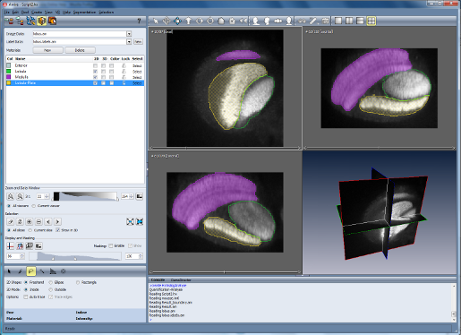
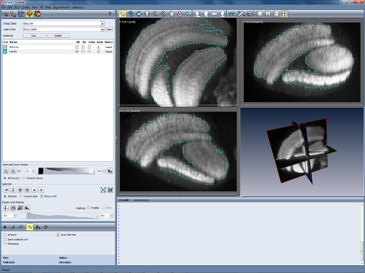

By following this step-by-step tutorial you will learn how to interactively
create a segmentation of a 3D image. A segmentation assigns to each pixel
of the image a label describing to which region or material the pixel
belongs, e.g., bone or the kidney. The segmentation is stored in a separate
data object called a LabelField. A
segmentation is the prerequisite for surface model generation and accurate
volume measurement.
This tutorial uses the segmentation editor, which is a sub-application. You
can conveniently switch between it and the main Amira window and other
sub-applications simply by clicking the appropriate button in the
sub-application toolbar.
This tutorial consists of the following steps:
- Creation of an empty label field.
- Interactive editing of the labels in the Segmentation Editor.
- Measuring the volume of the segmented structures.
- An alternative segmentation method: Threshold segmentation.
- Load the lobus.am data file from the directory
data/tutorials.
- Right click on the green icon and choose LabelField from the Labelling section.
A new green icon is added to the Pool. This green icon is for the label field
that will hold the segmentation results.
Simultaneously, the Segmentation Editor is displayed, replacing the Pool
view.
By default, the Segmentation Editor operates in 1-viewer mode.
In this mode, a single viewer is displayed. You can cycle through
the different 2D views (XY, XZ, YZ) and the 3D view by clicking on the
"Single-viewer" button in the viewer toolbar.
For this tutorial, we will use the 4-viewer layout, which
displays all three 2D views of your data set and the 3D view.
- Switch to the 4-viewer layout by clicking on the
"Four viewers" button in the viewer toolbar.
- In the XY or axial view, use the slider on the bottom to scroll through the
slices. Go to slice 20.
You will see two bigger structures and one structure just appearing on the top.
- If necessary, click on the second button in the Zoom and Data Window panel
to zoom out the data so that you have a view of the entire slice.
- Click on the brush icon in the segmentation tools bar (below the Display
and Masking panel).
- Mark the rightmost structure with the mouse. You can adjust the brush
size with the size slider if desired. Hold down the control button
to unselect wrongly selected pixels if necessary.
- When done, select the entry Inside in the Materials list. Then
click the + button in the Selection panel.
The previously selected pixels are now assigned to the material
Inside. You can right click on the entry Inside in the Materials list and choose a different draw style (for example, dotted).

Figure 19:
Segmentation Editor after selecting and assigning pixels for two structures in one slice
- Click into the material list and choose New Material from
the right button menu.
- Mark the middle structure using the brush, select the new material in the Materials list
and assign the pixels to that structure.
- Go to slice 21 and practice by segmenting the two structures.
If a structure does not change much from slice to slice, you can use interpolation.
- Go to slice 22 and mark the right structure using the brush. Go to slice 31
and mark the same structure.
- Choose from the menu bar: Selection/Interpolate.
- Scroll through the data set. You should see that the in-between slices
23 to 30 are selected too.
- In order to assign the selected pixels in all slices to the Inside material,
select the Inside material in the list,
then click the + button.
- Repeat the procedure between slice 32 and 50.
- Repeat the procedure for the middle structure.
Hints:
- It is highly recommended to frequently save the segmentation results
while working. In order to do so, first switch to the Amira main window by
clicking on the Object Pool button in the sub-application toolbar.
Then select the label field in the Amira main window
and choose Save or Save As... from the Amira File menu.
Click on the Segmentation Editor button in the sub-application toolbar to switch back.
- The brush is only the most basic segmentation tool. The Segmentation Editor
provides many more functions that are described on its reference page.
- There are many useful key bindings, including "+" to add a selection to
a material, SPACE and BACKSPACE to change the slice number, and "d" to toggle the
material draw style.
- Of course you can give the materials more meaningful names or colors using
the context menu (right mouse button in the list).
At this point switch back to the Amira main window and save the label field.
Once a structure is segmented, you can easily measure its volume:
- Right click on the label field's green icon, and choose Measure/MaterialStatistics.
- Press the Apply button. A new icon appears.
- Select this icon and press the Show button.
The units in the volume column depend on the units in which you have specified the
voxel size. In case of the lobus.am, the voxel size is in $${\mu}m$$, therefore
the volume is in $${\mu}m^3$$.
To obtain a full statistical analysis of the image data associated with the segmented
materials, you can connect the input port Field of the MaterialStatistics
module with the image data. To do so, follow this procedure:
- Left click on the white square of the MaterialStatistics module.
- In the context menu select Field.
- Left click on the image data object lobus.am.
- Hit Apply in the MaterialStatistics Properties Area.
The resulting spreadsheet now contains 12 columns showing different statistical parameters
of the image data associated with the different materials in the label field.
We now describe an alternative way of segmentation that can require less
manual interaction but which only works for high quality images.
In some cases a satisfying segmentation can be achieved automatically
based solely on the gray values of the image data set.
The first step is to separate the object from the background. This is
done by segmenting the volume into exterior and interior regions on
the basis of the voxel values.
- Load the lobus.am data file from the directory
data/tutorials.
- Attach a Labelling/LabelVoxel module to the data icon
and select it.
- Type 85 into the text field of port Exterior-Inside. You
may also determine some other threshold that separates
exterior and interior as described in the
tutorial on Image Data Visualization.
- Press the Apply button.
By this procedure each voxel having a value lower than the threshold is
assigned to Exterior and each voxel whose value is greater than
or equal to the threshold is assigned to Interior. This may, however,
cause artifacts that are not part of the object but which have voxel values
above the threshold to be assigned to the interior. This can be suppressed
by setting the remove couch option which assures that only the largest
coherent area will be labeled as the interior and all other voxels are
assigned to the exterior.
After you press the Apply button, a new data object is computed and its
icon appears in the Pool. The data object is named lobus.Labels. It is of type LabelField,
represents a cubic grid with the same dimensions as lobus.am, and
contains an interior or exterior label for each voxel according to the
segmentation result.
You can visualize and manually modify a
LabelField by using Amira's Segmentation Editor.
A more detailed description of this tool is contained
in the Reference guide. Here, we use the Segmentation Editor
to smooth the data in order to get a nicer looking surface of the object.
- Select the lobus.Labels icon and click on the
Segmentation Editor icon in the Properties Area.
In response the Segmentation Editor is displayed.
- In the XY or axial view view, use the slider on the bottom to
select slice 39.
- Choose a magnification ratio of 4:1 by pressing the zoom-up
button in the Zoom and Data Window region of the editor.

Figure 20:
Data from confocal microscopy is segmented using Amira's
Segmentation Editor.
The Segmentation Editor shows the image data to be segmented
(lobus.am) as well as contours representing the borders between
interior and exterior regions as contained in the lobus.Labels data
object. As you can see, the borders are not so smooth and there are many
little islands, bordered by brownish contours. This is what we want to improve
now.
- Choose Remove Islands from the editor's Segmentation
menu. In response, a small dialog window appears.
- In the dialog window select the all slices mode. Then press
Remove in order to apply the filter to all slices. Note how
the segmentation results become less noisy.
- To further clean up the image, choose Smooth Labels from
the editor's Segmentation menu. Another dialog box appears.
- Select the 3D volume mode and press the Apply
button in order to execute the smoothing operation.
- To examine the results of the filter operations, browse through
the label field slice by slice. In addition to the slice slider
you may also use the cursor-up and cursor-down keys for this.
- Return to the main Amira window using the sub-application toolbar.
In the next tutorial you will learn how to create a 3D surface model from the segmentation results.
{kind=link}
{kind=link}